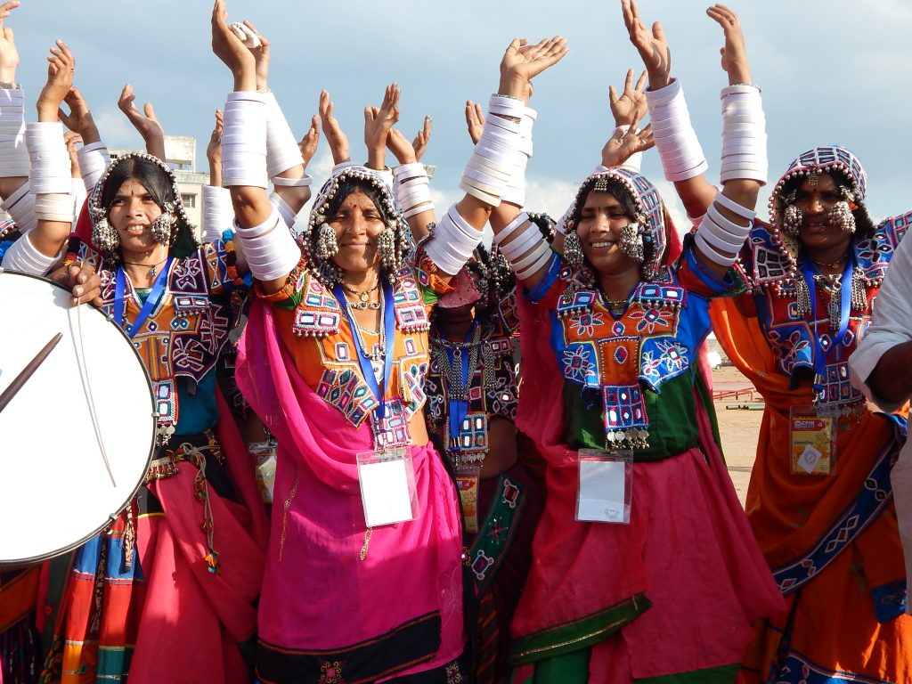

Traditional Clothing in Andhra Pradesh
The traditional clothing of Andhra Pradesh reflects the rich cultural heritage and diverse customs of the state. From elegant sarees to vibrant dresses, the attire showcases a blend of artistry and tradition.
Pochampally Saree:
Known for its intricate patterns and vibrant colors, the Pochampally saree is a traditional handwoven fabric from the Pochampally region, celebrated for its unique ikat weaving technique.Kanjeevaram Saree:
Though primarily associated with Tamil Nadu, the Kanjeevaram saree is also popular in Andhra Pradesh for its luxurious silk fabric and elaborate designs.
